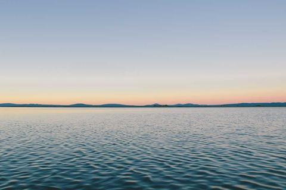
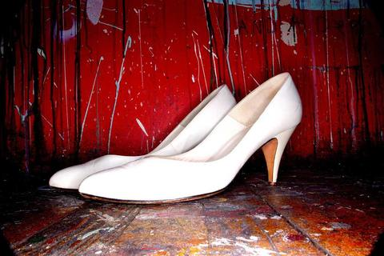
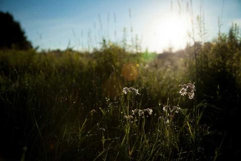
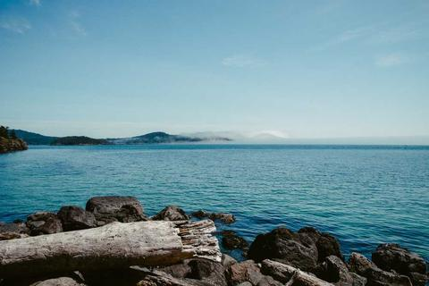

ARTnews · 今日 Art Basel Miami Beach Names 272 Exhibitors, With a Major Overhaul to the Fair’s Floor Plan 来源：ARTnews
ARTnews · 今日 In a Letter to President Trump, Artist Kehinde Wiley Asks to Repurchase His Painting Removed from US Embassy 来源：ARTnews 
ARTnews · 今日 Sotheby’s London Racks Up Highest-Ever Sale of Modern and Contemporary South Asian Art at $26.2 M., Setting Nine Artist Records 来源：ARTnews 
ARTnews · 今日 Lauren Halsey to Transform the Hollywood Bowl with Immersive World for a Concert Headlined by Erykah Badu 来源：ARTnews 
ARTnews · 今日 Nicole Eisenman Opens Up About Supporting Gaza: ‘Artists Are Hesitant to Grapple With the Destruction’ 来源：ARTnews 
ARTnews · 今日 Ancient Roman Settlement Discovered in Austria May Be Lost City of Claudivium 来源：ARTnews
ARTnews · 今日 Artists Christine Sun Kim, Rodney McMillian, and Vincent Valdez Win MacArthur 'Genius' Grants 来源：ARTnews
ARTnews · 今日 Senators Blumenthal and Cornyn File Amicus Brief in Case of Heirs Suing for Nazi-Looted Egon Schiele Works 来源：ARTnews
ARTnews · 今日 Matthew Barney's River of Fundament to Screen in Eight-Hour Event at New York Masonic Hall 来源：ARTnews
ARTnews · 今日 National Gallery of Victoria Executive Accused of Stealing $5.6 M. in Smartphone Scheme 来源：ARTnews
Artforum · 今日 Kehinde Wiley Moves to Buy So-Called “Lesbian Picnic” Painting Back from Trump 来源：Artforum